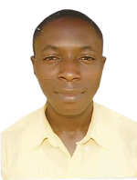

|  |
AJAGBE SAMUEL |
| ICT/Computer Engineer |
| ajagbes@gmail.com |
|
IT Officer/Computer Engineer at Indispensable Technologies
I am a certified Computer Engineer. As an individual who is interested in continuous professional development, my love for standards has been shown in my ability to maintain, install and test highly sophisticated ICT systems. I have developed
strong problem-solving skills, good managerial skills, ability to work for a longer period and to manage pressure. Having worked with several companies independently with less supervision, and display a high level of integrity, transparency and
respect for people, I am passionate in taking newly required engineer through the rudiments of maintenance, repair and computer operations.
WORK EXPERIENCE
| ETF DIGITAL TECHNOLOGY |
2020 – 2021 |
Digital Marketing Personnel, Oregun, Ikeja, Lagos
RESPONSIBILITIES
Creating Awareness Digitally and Getting New Clients.
| ALPHA CLINIC (NYSC) |
2018 – 2019 |
ICT/Facility Manager. Sagamu, Ogun State.
RESPONSIBILITIES
- ICT/Facility Management
- Network Maintenance
- Website Maintenance
- CCTV Installation and Maintenance
- Medbase Maintenance
| ABCON MODEL DRIVING SCHOOL |
2015 – 2017 |
Manager Sagamu, Ibeshe Road, Ikorodu, Lagos
RESPONSIBILITIES
- Operation Management
- Training Coordinator
ICT Officer at Agric B/Stop, Ikorodu, Lagos
RESPONSIBILITIES
- ICT Personel
- Training Manager
| AR'RUQBA TECHNOLOGIES |
2013 – 2014 |
Student Industrial Work Experience Scheme (SIWES) | Agric B/Stop, Ikorodu, Lagos
RESPONSIBILITIES
- Troubleshooting of System Faults
- Maintenance and Repair of Malfunctioning Systems.
| QUALIFICATION AND SCHOOLS ATTENDED WITH DATES |
| The Federal Polytechnic Offa, Kwara State |HND - Computer Engineering Technology| |
2016-2018 |
| The Federal Polytechnic Offa, Kwara State |OND - Computer Engineering Technology| |
|
| Kaydel Comprehensive College, Igbo Oluwo Estate, Ikorodu |WASSCE| |
|
PROFESSIONAL CERTFIFICATION
Jobberman Soft Skills
Impact of Technological Advancement on Economic Diversification and Development in
Nigeria.
Sustainable Development Goals (SDGs)
SKILLS
| Maintenance of Personal Computer and Laptop System (Hardware & Software) |
⭐⭐⭐⭐⭐ |
| Web designing using (HTML and CSS programming language) |
⭐⭐⭐⭐⭐ |
| Data Processing: - Microsoft Office Tools: MS-Word, MS-Access, MS-Excel, MS- PowerPoint.
|
⭐⭐⭐⭐⭐ |
| Graphic Design using Adobe Photoshop, CorelDraw. |
⭐⭐⭐⭐⭐ |
| Social Media Marketing using Facebook, Twitter, Instagram. |
⭐⭐⭐⭐ |
| Electronics Design; PCB, Circuit design, Microcontroller, Embedded Design. |
⭐⭐⭐ |
LANGUAGE SKILLS
English
Yoruba
REFREE
Available on Request